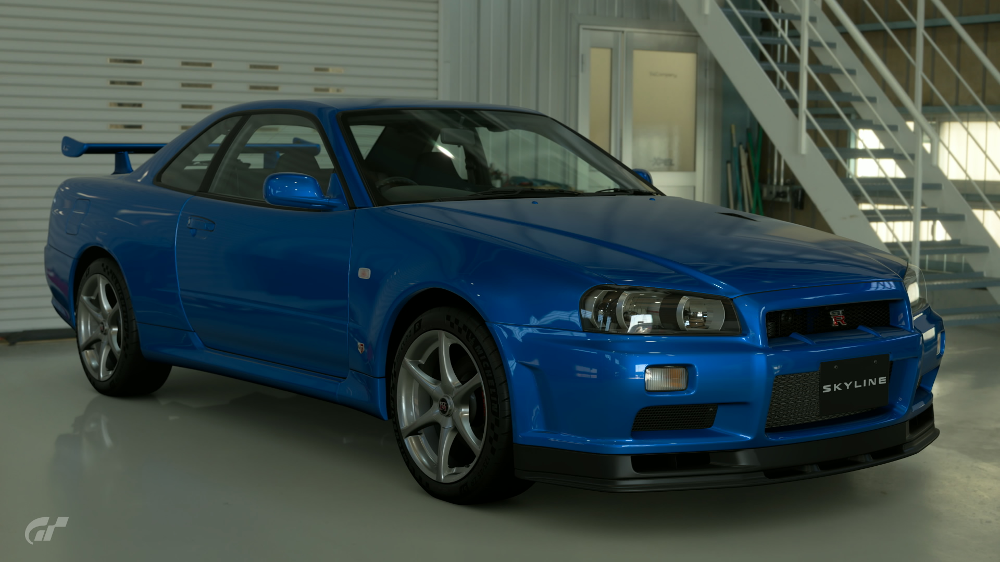
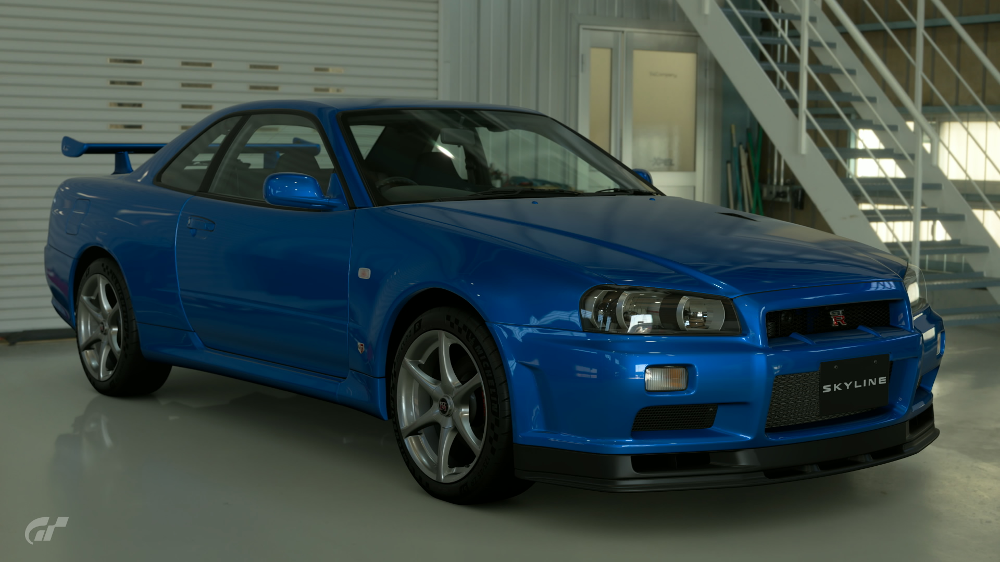

2002 Nissan Skyline GT-R R34 V-Spec II Nür
This final and limited edition R34 GT-R was dubbed the 'V-Spec II Nür'. The name derives from the Nürburgring track where the GT-R was developed. For this model, the engine's components were upgraded to achieve higher performance than its predecessors. Only 1000 of these priceless variant R34 GT-Rs were constructed in the line's final production year.
- Used (29990 mi)
- Stock
- 6MT
- Saitama, Japan
- Bayside Blue
- 336hp
¥13,500,000